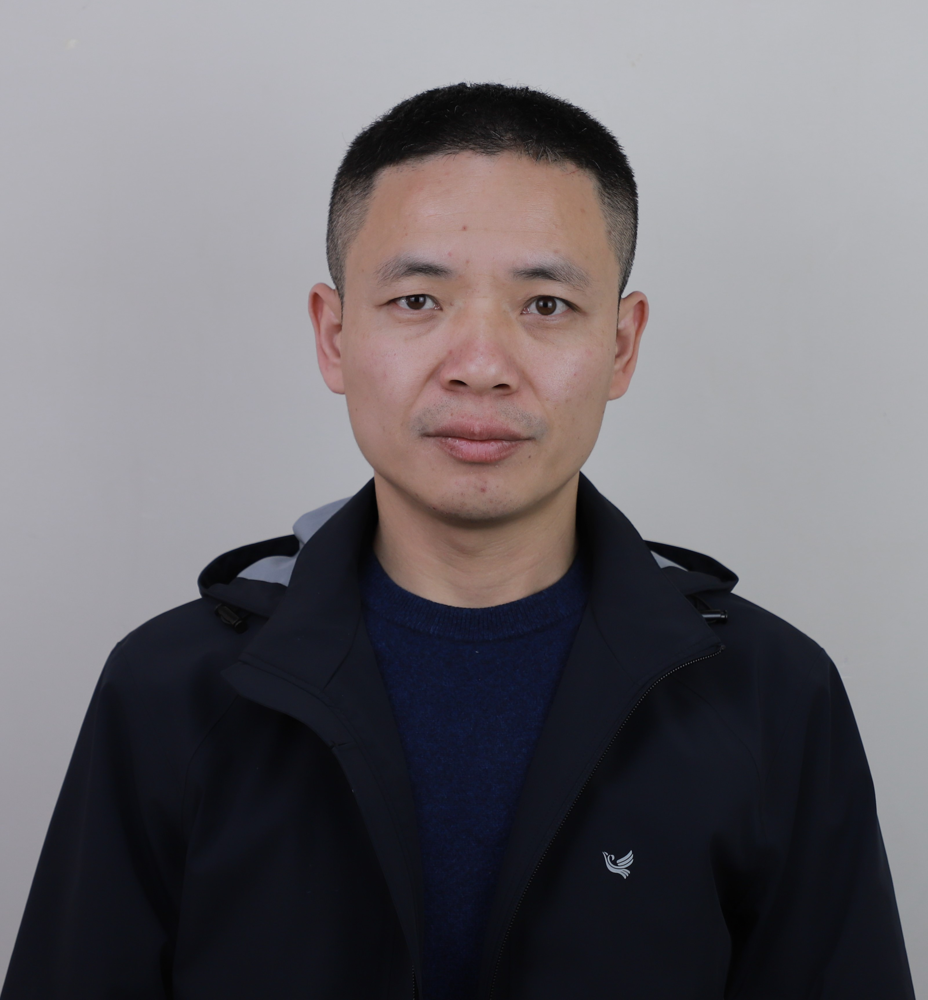

Peng

Summary
I Proficient in procurement, administration and management.
I am highly self-motivated and passionate about information technology applied in business cicumstance.
Education
- Master of Information Technology
University of Western Australia
2023-2025
- Bachelor of Engineering in Engineering Management
Sichuan University, China
2006– 2010
Work Experience
-
China Railway Construction Corporation Limited - Qatar Branch, Qatar
2015-2022
Sourcing Engineer
• Worked on Road and Infrastructure Construction Projects in Qatar.
• Responsible for logistic management to ensure material supply is effective throughout the organization.
• Trained and equipped employees with appropriate resources to optimally perform their duties.
• Restructured the process of material resourcing in the organization for effective cost control.
-
China Civil Engineering Construction Corporation -Zambia Branch, Copperbelt, Zambia
2011 – 2014
Procurement Engineer
• Worked on Kafulafuta Water Supply Project based in Copperbelt Province, Zambia.
• Responsible for logistic procedures including coordinating and negotiating with material suppliers, dealing with all aspects of material purchasing. Ensured the efficient supply of construction materials.
• Followed up the customs clearance progress of importing goods.
• In charge of warehouse and equipment management. Provided supervising and training to both Chinese and local workers relating to warehouse organization and management.
• Good at manpower management and dealing with conflicts between organization and other local companies.
Skills
- Microsoft Office Suite ⭐️⭐️⭐️⭐️⭐️
- Organizational skills ⭐️⭐️⭐️⭐️
- Languages: Proficient English, Native Mandarin
Other